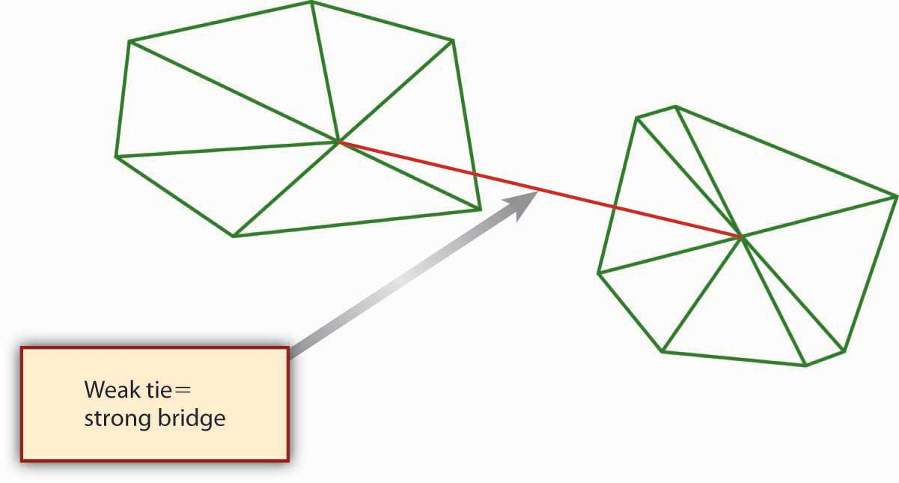
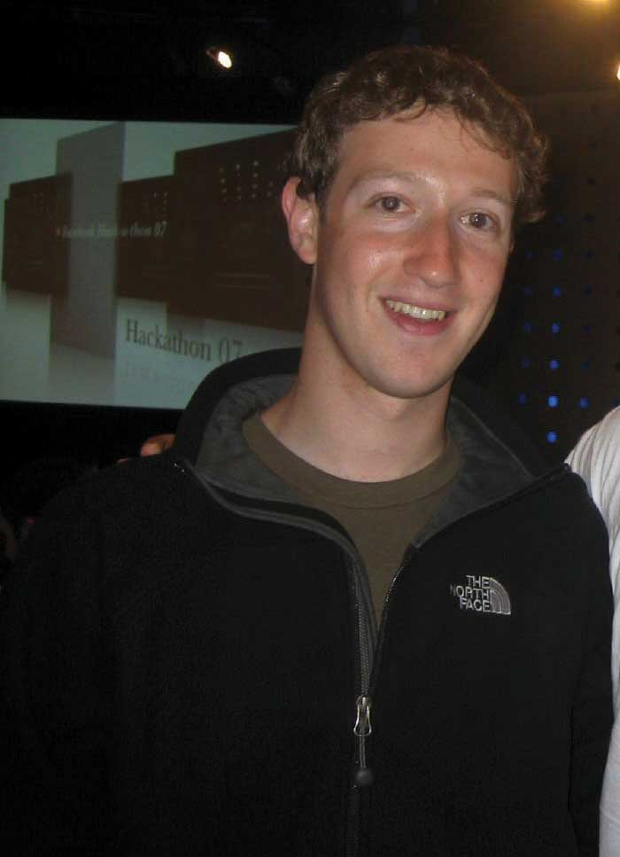
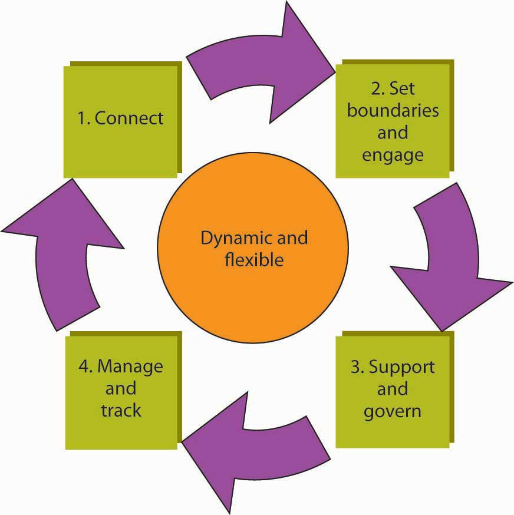

You probably have an intuitive sense of how and why social networks are valuable for you, personally and professionally. The successful 2008 U.S. presidential campaign of Barack Obama provides a dramatic example of how individuals can benefit when they understand and apply the principles and power of social networking.Cox, C. (2008, October 7). Retrieved November 13, 2008, from http://blog.styleapple.com/styleapple-creative-design-blog-the-place-where-creative-pros-flex-their-muscles/bid/5866/Arguably-The-Most-Effective-Branding-Campaign-Ever. In this section, we discuss three fundamental principles of social network theory, then help you see how social networks create value in your career and within and across organizations.
Across all social networks, performance depends on the degree to which three fundamental principles are accounted for.Kilduff, M., & Tsai, W. (2004). Social networks and organizations. Beverly Hills, CA; Sage. The first is the principle of reciprocityThe principle that actors in a network are more likely to reciprocate favors., which simply refers to the degree to which you trade favors with others. With the principle of reciprocity, managers have the ability to get things done by providing services to others in exchange for the services they require. For instance, you are more likely to get assistance with a problem from a colleague at work when you have helped him or her out in the past. Although the quid pro quo may not be immediate, over time managers will receive only in proportion to what they give. Unless the exchanges are roughly equivalent over time, hard feelings or distrust will result. In organizations, few transactions are one-shot deals. Most are ongoing trades of “favors.” Therefore, two outcomes are important: success in achieving the objective and success in improving the relationship such that the next exchange will be more productive.
The second principle is the principle of exchangeThe principle that network exchange is more likely when you have access to unique resources.. Like the reciprocity principle, it refers to “trading favors,” but it is different in this way: the principle of exchange proposes that there may be greater opportunity for trading favors when the actors are different from one another. In fact, according to network theory, “difference” is what makes network ties useful in that such difference increases the likelihood that each party brings a complementary resource to the table. Going back to our example where you sought out assistance from a colleague, you probably needed that assistance because that person brought a different skill set, knowledge, or other resources to bear on the problem. That is, since you were different, the value of exchange was greater.
The third principle is the principle of similarityThe principle that network ties are more likely to form among similar, rather than dissimilar, actors.. Psychologists studying human behavior have observed that relationships, and therefore network ties, tend to develop spontaneously between people with common backgrounds, values, and interests. Similarity, to the extent that your network is composed only of like-minded folks, also makes it more likely that an individual may be dependent on a handful of people with common interests.
Why is it important to understand these three principles? As a manager, you will find your network useful to the extent that you can balance the effects of the three principles. Because of similarity, it is easier to build networks with those with whom you have various things in common, though this similarity makes the network less useful if you need new ideas or other resources not in the current group. A critical mistake is to become overly dependent on one person or on only a few network relationships. Not only can those relationships sour but also the manager’s usefulness to others depends critically on his or her other connections. Those people most likely to be attractive potential protégés, for example, will also be likely to have alternative contacts and sponsors available to them.
Similarity also means that you have to work harder to build strong exchange networks, since their formation is not spontaneous. Most personal networks are highly clustered—that is, your friends are likely to be friends with one another as well. And, if you made those friends by introducing yourself to them, the chances are high that their experiences and perspectives echo your own. Because ideas generated within this type of network circulate among the same people with shared views, a potential winner can wither away and die if no one in the group has what it takes to bring that idea to fruition. But what if someone within that cluster knows someone else who belongs to a whole different group? That connection, formed by an information broker, can expose your idea to a new world, filled with fresh opportunities for success. Diversity makes the difference.
Finally, for reciprocity to work, you have to be willing and able to trade or reciprocate favors, and this means that you might need access to other people or resources outside the current network. For example, you may have to build relationships with other individuals such that you can use them to help you contribute to your existing network ties.
We owe our knowledge about the relationship between social network characteristics and finding a job to Stanford sociologist Mark Granovetter. In a groundbreaking study, Granovetter found that job seekers are more likely to find a job through weak ties than through strong ties.Granovetter, M. (1974). Getting a job: A study of contacts and careers (2nd ed.). Chicago: University of Chicago Press. He demonstrated that while job hunters use social connections to find work, they don’t use close friends. Rather, survey respondents said they found jobs through acquaintances: old college friends, former colleagues, people they saw only occasionally or just happened to run into at the right moment. New information, about jobs or anything else, rarely comes from your close friends, because they tend to know the same things and people you do. Strong tiesA tie that exists among actors who know each other well and engage in regular exchange., as you might expect, exist among individuals who know one another well and engage in relatively frequent, ongoing resource exchanges. Weak tiesA tie that exists among actors who do not know one another well and engage in infrequent exchange., in contrast, exist among individuals who know one another, at least by reputation, but who do not engage in a regular exchange of resources. In fact, Granovetter showed that those who relied on weak ties to get a job fared better in the market in terms of higher pay, higher occupational status, greater job satisfaction, and longer job tenure. While much in the world has changed since Granovetter’s 1974 research, subsequent studies continue to affirm his basic findings on the consequences of social network structure.Goleman. D. (2006). Social intelligence. New York: Bantam. As you might expect, for weak ties to be effective though, there must be some basis for affinity between the indirectly connected individuals, but this affinity can simply be having the same birth month or high school or college alma mater.
Figure 9.8 The Value of Weak Ties
The value of weak ties is highly counterintuitive; we tend to think of relationships being more valuable when we have strong ties to others. However, if you think about it, the value of a weak tie lies in the fact that it is typically a bridging tieA tie that provides nonredundant information and resources., that is, a tie that provides nonredundant information and resources. In the case of a job search, the weak tie serves as a strong bridge. “Social Networking as a Career-Building Strategy” suggests some personal strategies you might consider with your own social networks.
Penelope Trunk, author of “The Brazen Careerist” column and blog (blog.penelopetrunk.com), views job hunting not as an event but as a lifestyle. She advises that in today’s business environment, people change jobs so often that they need to keep their eye on the market even if they just started a new job. In her view, “the people who control their destiny most effectively leave their job when they find a better one, not when they are tossed out because of layoffs or reorganizations.” This also means that social networking should be a central element in any job-search strategy. And because many jobs are filled by knowing someone who knows about an open position, Trunk argues that it’s more important to network than it is to read the want ads. Trunk evokes the principle of reciprocity when she says, “building a network is adding value to lots of peoples’ lives so that they, in turn, will want to add value to yours.” Another useful strategy is to network proactively rather than reacting to concerns about your present job or news of a possible opening. By being proactive, you will increase your chances of being in the right place at the right time.
Career networking opportunities are plentiful; regardless of where you live, you can use the Internet to read blogs, subscribe to e-mail newsletters, and make friends on social networking sites. When you consider the principle of exchange, you realize that your networking possibilities are not limited to people in your chosen field—you can actually gain more by networking with those in related fields, or even in jobs far removed from yours. With the exchange principle in mind, even residents of sparsely populated rural areas can network with their neighbors a few miles down the road.
Adapted from Trunk, P. (2008, March 1). Take control of your career destiny. Wisconsin State Journal, B1.
LinkedIn (http://www.LinkedIn.com) is the largest online network of experienced professionals from around the world, representing 150 industries. Other business networking sites include Plaxo.com, Ryze.com, and Xing.com (primarily Europe and China). Here are eight effective networking job-hunting tactics to employ with LinkedIn (or with any networking site):
It is important to note here a factor called Dunbar’s numberNamed after anthropologist Robin Dunbar, Dunbar’s number is the conceptual upper limit of 150 ties in a network if ties are to be effectively maintained.. That is, there is some natural upper limit to the size of network you can effectively maintain, even with online tools like Facebook and LinkedIn. The existence of an upper boundary makes sense if you think about it—each contact you add to your network will likely require some amount of time to sustain. In 1993, Oxford anthropologist Robin Dunbar theorized that “this limit is a direct function of relative neocortex size [your brain’s center of higher brain functions], and that this in turn limits group size…the limit imposed by neocortical processing capacity is simply on the number of individuals with whom a stable inter-personal relationship can be maintained.”Bialik, C. (2007, November 16). Sorry, you may have gone over your limit of network friends. Wall Street Journal. On the periphery, the number also includes past colleagues such as high school friends with whom a person would want to get reacquainted if they met again.
Figure 9.9
Mark Zuckerberg, cofounder of Facebook, helped to bring social networking to 90 million users.
In 2002, organizations researchers Rob Cross, Steve Borghatti, and Andrew Parker published the results of their study of the social networking characteristics of 23 Fortune 500 firms.Cross, R., Borgatti, S., & Parker, A. (2002). Making invisible work visible. California Management Review, 44(2), 25–46. These researchers were concerned that traditional analysis of organizational structure might miss the true way that critical work was being done in modern firms—that is, they theorized that social networks, and not the structure presented on the organization chart, might be a better indicator of the flow of knowledge, information, and other vital strategic resources in the organization. One goal of their research was to better define scenarios where conducting a social network analysis would likely yield sufficient benefit to justify the investment of time and energy on the part of the organization.
Cross and colleagues found that SNA was particularly valuable as a diagnostic tool for managers attempting to promote collaboration and knowledge sharing in important networks. Specifically, they found SNA uniquely effective in:
Consumer product giant Procter & Gamble (P&G) pioneered the idea of connect and develop, which refers to developing new products and services through a vast social network spanning parts of P&G and many other external organizations. Like many companies, P&G historically relied on internal capabilities and those of a network of trusted suppliers to invent, develop, and deliver new products and services to the market. It did not actively seek to connect with potential external partners. Similarly, the P&G products, technologies and know-how it developed were used almost solely for the manufacture and sale of P&G’s core products. Beyond this, P&G seldom licensed them to other companies.
However, around 2003 P&G woke up to the fact that, in the areas in which its does business, there are millions of scientists, engineers, and other companies globally. Why not collaborate with them? P&G now embraces open innovation, and it calls this approach “Connect + Develop.” It even has a Web site with Connect + Develop as its address (http://www.pgconnectdevelop.com). This open innovation network at P&G works both ways—inbound and outbound—and encompasses everything from trademarks to packaging, marketing models to engineering, and business services to design.
On the inbound side, P&G is aggressively looking for solutions for its needs, but also will consider any innovation—packaging, design, marketing models, research methods, engineering, and technology—that would improve its products and services. On the outbound side, P&G has a number of assets available for license: trademarks, technologies, engineering solutions, business services, market research methods and models, and more.
As of 2005, P&G’s Connect + Develop strategy had already resulted in more than 1,000 active agreements. Types of innovations vary widely, as do the sources and business models. P&G is interested in all types of high-quality, on-strategy business partners, from individual inventors or entrepreneurs to smaller companies and those listed in the FORTUNE 500—even competitors. Inbound or out, know-how or new products, examples of success are as diverse as P&G’s product categories. Some of these stories are shown in “P&G Connect + Develop Success Stories.”
Bringing Technology Into P&G
Olay Regenerist
How a small French company became part of P&G Beauty’s $2 billion brand
A few years ago, the folks in P&G’s skin care organization were looking both internally and externally for antiwrinkle technology options for next-generation Olay products. At a technical conference in Europe, P&G first learned of a new peptide technology that wound up being a key component used in the blockbuster product, Olay Regenerist.
The technology was developed by a small cosmetics company in France. They not only developed the peptide but also the in vitro and clinical data that convinced P&G to evaluate this material. After they shared some of their work at a conference attended by P&G’s skin-care researchers, they accepted an invitation for their technologists to visit P&G and present their entire set of data on the antiwrinkle effects of the new peptide. This company now continues to collaborate with P&G on new technology upstream identification and further upstream P&G projects.
Taking Technology Out of P&G
Calsura
Not all calcium is created equal.
When P&G was in the juice business, it discovered Calsura, a more absorbable calcium that helps build stronger bones faster, and keeps them stronger for life. The addition of Calsura calcium makes any food or drink a great source of the daily calcium needed for building stronger bones faster in kids, and keeping bones stronger throughout adulthood; Calsura is proven to be 30% more absorbable than regular calcium. Today, P&G licenses the Calsura technology to several companies.
University Collaboration
University of Cincinnati Live Well Collaborative
Collaborating with a university in a new way
P&G has partnered with the prestigious design school at the University of Cincinnati to develop products specifically for consumers over age 50. Using design labs, university students and P&G researchers collaborate to study the unique needs of the over-50 consumer. The goal is to develop and commercialize products that are designed for this consumer bracket.
Adapted from http://www.pg.com (retrieved June 4, 2008).
Strategy consultant McKinsey & Company points to recent academic research that finds differences in individual creativity and intelligence matter far less for organizational innovation than connections and networks. That is, networked employees can realize their innovations and make them catch on more quickly than nonnetworked employees can.Fleming, L., & Marx, M. (2006). Managing creativity in small worlds. California Management Review, 48(4), 6–27.
On the basis of what was found by Cross and colleagues across many large firms, within P&G in particular, and in their own research, McKinsey has observed four important steps in the innovation network process.How companies approach innovation: A McKinsey global survey. (2007). McKinsey Quarterly. These four critical steps in designing, implementing, and managing an innovation network are summarized in the following figure.
Figure 9.10 Managing the Innovation Network
Adapted from http://www.mckinseyquarterly.com (retrieved June 4, 2008).
The first step, connect, involves the identification of key people in the organization with an innovation mind-set. Such individuals are not wed to the status quo and are comfortable with change and uncertainty. It is important to involve individuals with different backgrounds and approaches to innovation. For instance, some individuals are great at generating ideas while others may be better at researching and validating them. This group of individuals would then be defined as a network. The second step, set boundaries and engage, is where the network’s goals and objectives are defined. It is important to make it clear how the network’s goals and objectives will contribute to the organization’s goals and larger strategy, mission, and vision. Time frames and desired target outcomes are stated as well.
In the third step, support and govern, the leadership structure for the network is decided on, along with any protocols for meeting, sharing ideas, and decision making. With these process guidelines in place, the network members can then make sure that they have identified the resources necessary to conduct their work. This includes gaining sponsorship and buy-in from other parts of the organization, including upper management. Finally, the fourth step involves managing and tracking. This last step covers a spectrum of needs, ranging from how network members will be recognized and rewarded for their contributions, the agreement about process-tracking criteria, and some guidelines on how new members join the network and others leave.
As mentioned in the connect stage of developing an innovation network, you can fine-tune the network’s goals by identifying the appropriate mix and balance of employees. Innovation networks, like cross-functional teams, require different skills and attitudes. In McKinsey’s experience, they include combinations of several archetypes. Which one are you?
This section showed how social networks create value. We started by introducing the social network theory concepts of reciprocity, exchange, and similarity. We then discussed using social networks as a vehicle for advancing your own career. The section concluded by explaining how social networks create value in and across organizations, with specific examples of making invisible work visible, Procter & Gamble’s Connect + Develop, and McKinsey’s “innovation network” concept.


{kind=link}